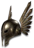

Heyday

Conscience of the King
Guardian Crown
Defense: 117-168
Required Level: 87
+200-300 Defense
+25% to All Resistances
+15% Physical Damage Reduction
+1-3 to All Skills
+50-100% Chance Items Roll Magic or Better
+5-10% to Experience Gained
20-30% Increased Chance of Blocking
+20-30 to all Attributes
Slows Target by 20-30%
Unique Barbarian Helm
Conscience of the King
- Type
- Barbarian Helm
- Base
- Guardian Crown
- Tier
- Elite
- Required level
- 87
- Item level
- 83
- Required strength
- 196
- Max sockets
- 4
- Class
- Barbarian only